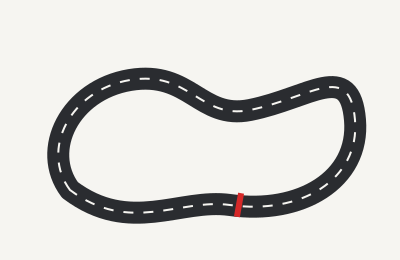

I circuiti
Ogni pista ha un carattere suo. Alcune sono veloci e quasi tutte rettilinei, altre sono strette e non perdonano niente. Ne ho scelte quattro.


Monza
L'autodromo è stato costruito nel 1922 e ospita il Gran Premio d'Italia. Lo chiamano il tempio della velocità perché ci sono lunghi rettilinei e si va al massimo quasi sempre.
Monaco
Si corre tra le strade della città, con curve strettissime e muretti a pochi centimetri. Sorpassare è quasi impossibile, quindi la gara si decide molto nelle qualifiche.
Spa-Francorchamps
Si trova in Belgio, nelle Ardenne, ed è lunga più di 7 chilometri. La parte più famosa è la salita di Eau Rouge e Raidillon, che i piloti affrontano a tutta velocità.
Suzuka
È in Giappone e ha una particolarità: il tracciato ha la forma di un otto, quindi in un punto la pista passa sopra sé stessa con un sovrappasso.
Per capire come si è arrivati a queste macchine, c'è la pagina di storia. Oppure torna alla home.